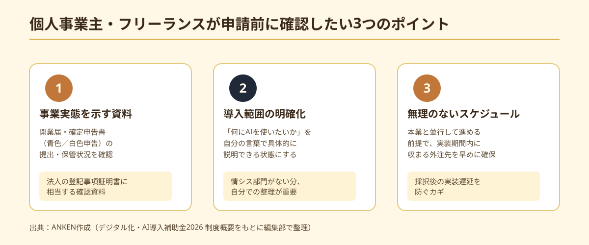
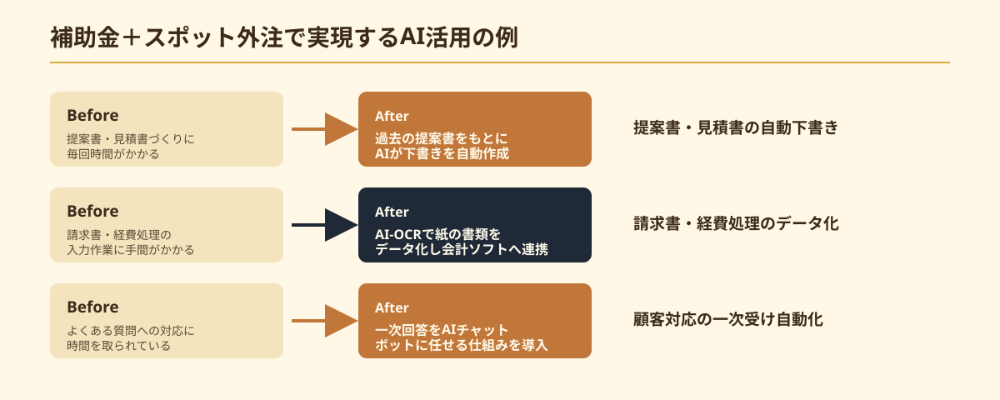

個人事業主・フリーランスも対象になるのか
「デジタル化・AI導入補助金2026」は、中小企業・小規模事業者のAI・ITツール導入を支援する制度です。以前の記事でも紹介したとおり、補助上限額は申請枠によって異なり、補助率は基本2分の1、賃上げ等の条件を満たす小規模事業者では最大5分の4まで引き上げられる場合があるのが特徴です。
個人事業主・フリーランスは、この「小規模事業者」の枠に該当するケースが多く、制度上は法人と同様に申請対象として扱われます。ただし、開業届の提出状況や事業実態の証明方法など、法人とは確認のされ方が異なる部分があるため、「自分は対象になるのか」を曖昧にしたまま申請準備を進めてしまうと、後になって書類を揃え直す手間が発生しがちです。
制度の詳細・対象範囲は年度や申請枠によって変更される可能性があるため、本記事の内容だけで判断せず、必ず公式サイトの最新情報を確認してください。
法人と比べて準備しておきたい3つの書類・体制
個人事業主・フリーランスが申請を検討する際、法人と比べて特に確認しておきたいポイントが3つあります。

1つ目は、開業届・確定申告書など「事業を行っている」ことを示す資料です。法人であれば登記事項証明書で事業実態を示せますが、個人事業主は開業届の提出や確定申告（青色申告・白色申告）の実績が、事業実態の確認資料として求められる場合があります。
2つ目は、導入したいツール・業務範囲を具体的に整理しておくことです。法人のように情シス部門や担当者がいないことが多いため、「何にAIを使いたいのか」を自分の言葉で明確に説明できる状態にしておくと、支援事業者との相談がスムーズになります。
3つ目は、実施スケジュールに無理がないかを確認することです。個人事業主・フリーランスは本業と並行して申請対応を行うことが多く、採択後の実装スケジュールが事業期間内に収まるよう、早めに外注先の目星をつけておくことが重要です。
個人事業主が申請する際の流れ
申請の基本的な流れは法人と同じく、経済産業省（事務局）に登録された「支援事業者」を通じて行う仕組みです。個人事業主・フリーランスの場合も、自分一人で事務局に直接申請するわけではなく、支援事業者と相談しながら書類を整えていく点は変わりません。
- 導入したいAI・ITツールの内容と、想定する効果を整理する
- 登録された支援事業者を選定し、個人事業主でも対応可能か相談する
- 開業届・確定申告書など事業実態を示す資料を準備する
- 支援事業者と協力して申請書類を作成・提出する
- 採択後、ツール導入・実装を進め、実績報告を行う
支援事業者によっては法人取引を中心に扱っており、個人事業主への対応実績が少ない場合もあります。相談の初期段階で「個人事業主としての申請に対応できるか」を確認しておくと、後の手戻りを避けられます。
補助金とスポット外注を組み合わせる具体例
個人事業主・フリーランスがAI導入補助金を活用する際も、「補助金でツール導入費用をまかない、自分の業務に合わせたカスタム実装はスポット外注で別途依頼する」という組み合わせ方が現実的です。汎用ツールをそのまま導入しただけでは、結局使いこなせずに終わってしまうことも多いためです。

例えば、提案書・見積書づくりに毎回時間がかかっている場合は、過去の提案書をもとにAIが下書きを作成する仕組みを導入する例があります。請求書・経費処理に手間がかかっている場合は、AI-OCRで紙の書類をデータ化し、会計ソフトに連携する仕組みを構築する例もあります。顧客対応に追われている場合は、よくある質問への一次回答をAIチャットボットに任せる仕組みを導入する例も考えられます。
いずれも、ツール導入費用の一部を補助金でまかないながら、自分の業務フローに合わせた最小限のカスタム実装をスポット外注で依頼することで、初期コストを抑えつつ実際に使われる仕組みを作りやすくなります。
申請前に確認しておきたい3つの注意点
個人事業主・フリーランスが申請を検討する際は、次の3点を確認しておくと進めやすくなります。
1つ目は、最新の申請要件・対象者の範囲を公式サイトで必ず確認することです。補助上限額・補助率・対象範囲は年度や申請枠によって変わるため、本記事の内容だけで判断しないでください。
2つ目は、個人事業主への対応実績がある支援事業者を選ぶことです。支援事業者ごとに得意分野や対応実績が異なるため、自分と近い規模・業種の事業者を支援した経験があるかを確認しておくと安心です。
3つ目は、本業との兼ね合いを踏まえたスケジュールを組むことです。採択後の実装期間内に、申請対応と本業を両立させる必要があるため、外注先への相談はできるだけ早い段階から動き出しておくことをおすすめします。
🔧 「補助金と並行してAI導入を進めたい」個人事業主・フリーランス様へ
ANKENでは、補助金の申請代行は行っていませんが、ツール導入後のカスタム実装・運用設計を、固定費ゼロ・週末対応のエンジニアとスポットマッチングで依頼できます。
よくある質問
- Q. 個人事業主・フリーランスも補助金の対象になりますか？
- A. なります。法人と同様にAI導入補助金2026の対象ですが、必要書類や体制が一部異なります。
- Q. 法人と比べて何を準備すべきですか？
- A. 事業実態を示す書類や確定申告書など、個人事業主特有の証憑を準備しておく必要があります。
- Q. 補助金で浮いた予算はどう活用できますか？
- A. 浮いた予算をスポット外注の実装費に充てることで、自己負担を抑えてAI導入を進められます。
まとめ・ANKENへのご相談
デジタル化・AI導入補助金2026は、個人事業主・フリーランスも「小規模事業者」として対象になり得る制度です。法人と比べて事業実態を示す資料の準備や、対応実績のある支援事業者選びに少し配慮が必要ですが、基本的な申請の流れは大きく変わりません。補助金でツール導入費用をまかないながら、自分の業務に合わせた実装はスポット外注で進める、という組み合わせ方が現実的な活用方法です。
ANKENでは補助金の申請代行は行っていませんが、「補助金活用後、または並行して、自分の業務に合わせたAI実装をどう進めるか」というご相談には対応しています。固定費ゼロ・週末スポットから、AI導入の実装部分をサポートします。
補助金活用と並行したご相談も歓迎します。固定費ゼロ・週末スポットから依頼可能です。
👉 無料でスポット依頼を相談する初回相談は無料です。要件が固まっていなくてもOKです。